NaviJob / Design gallery
B’s layout. Sage & Forest selected.
You chose B / Open Road. B1 / Sage & Forest is the selected colour palette.
Click any image or “Open full size” to see the original file. No app server or internet connection is needed.
Selected palette and comparison options
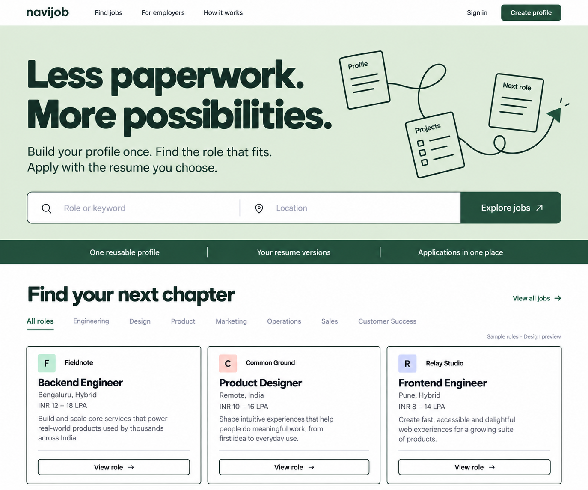
B1 — Sage & Forest · Selected
Soft sage with dark forest type and buttons.
Open full size ↗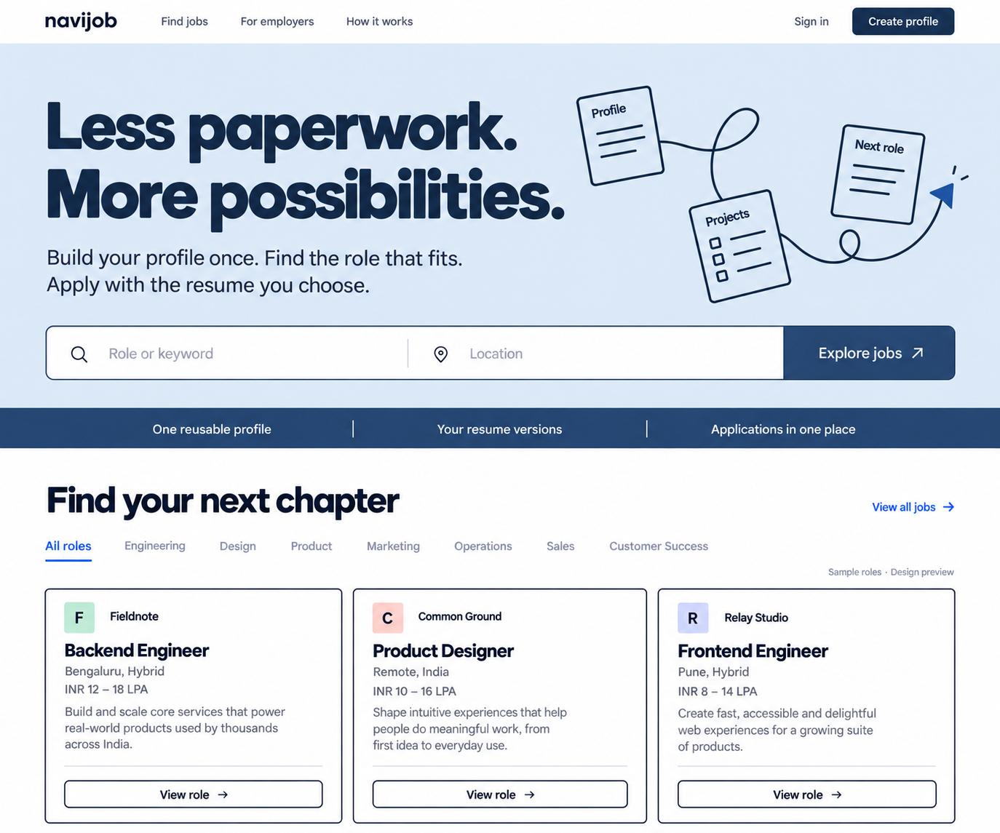
B2 — Powder Blue & Navy
Pale blue with deep navy type and buttons.
Open full size ↗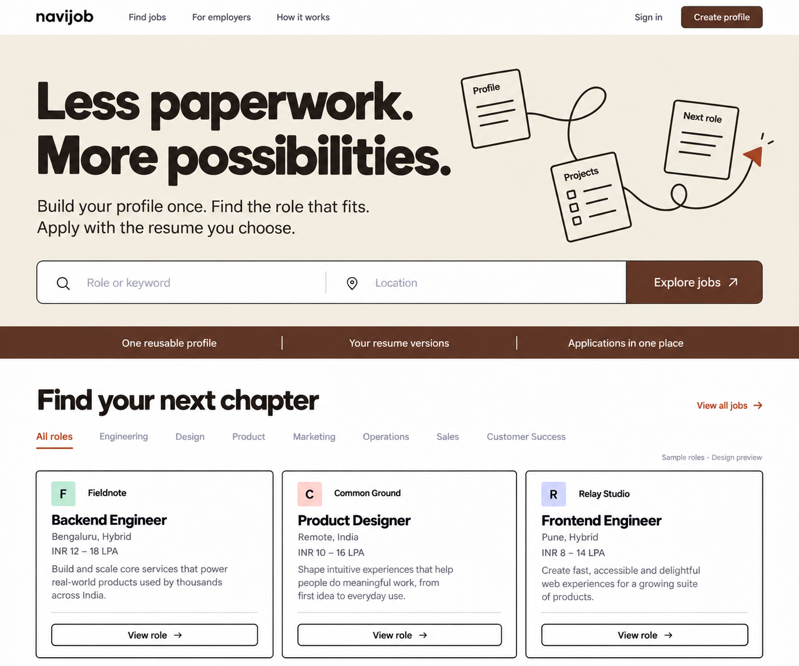
B3 — Ivory & Rust
Warm ivory with espresso type and rust accents.
Open full size ↗Original B — the selected direction
The yellow version is here for comparison; its palette has not been approved.
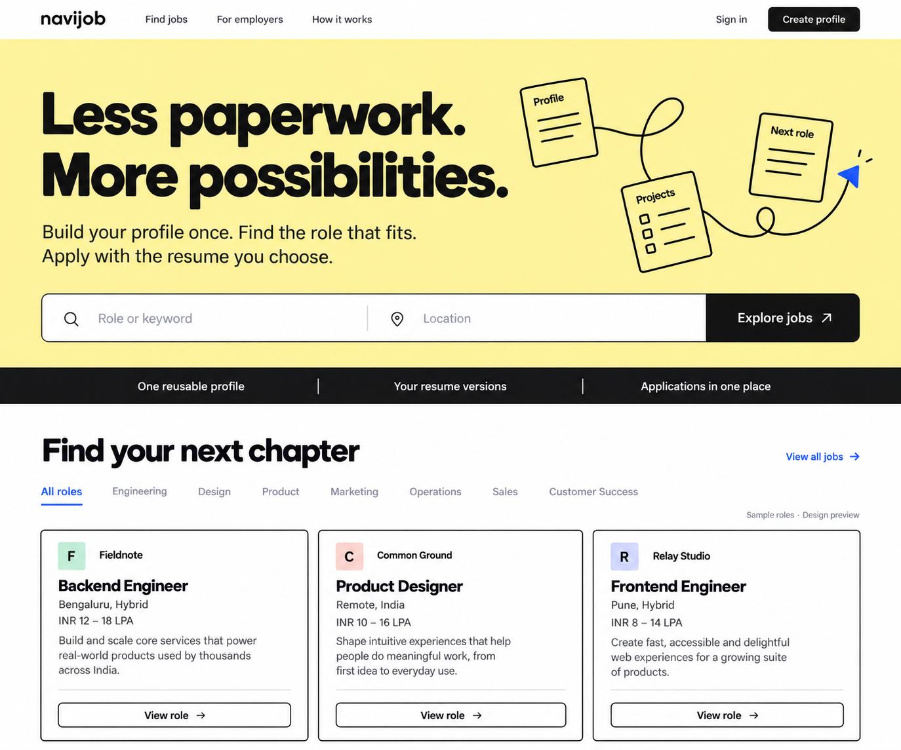
B — Open Road
Selected layout and typography direction.
Open full size ↗Other round 02 directions — unselected
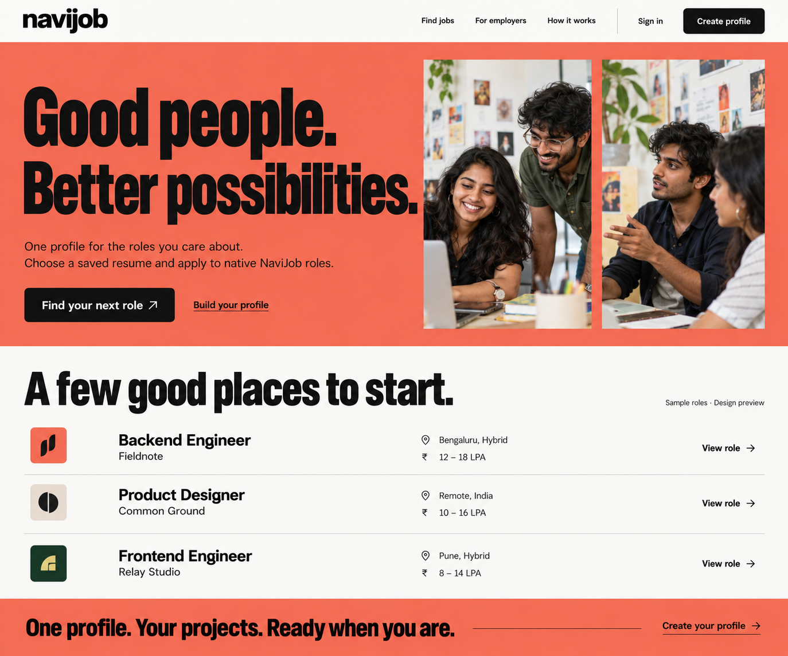
A — Talent Collective
Exploration history.
Open full size ↗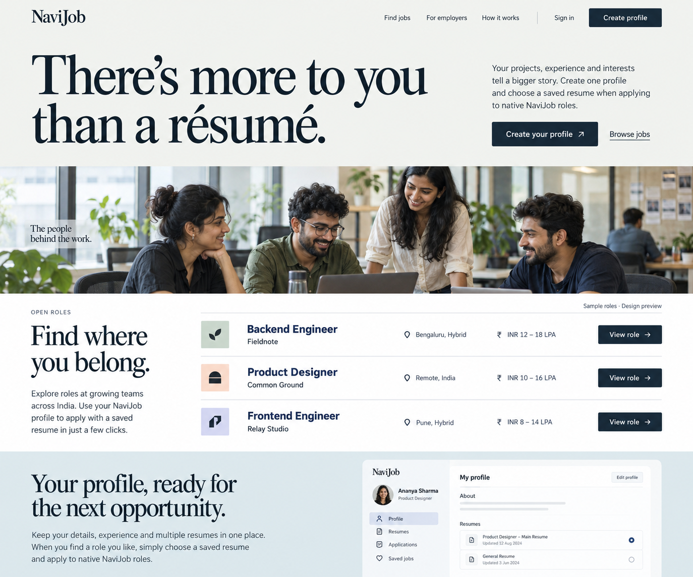
C — Human Perspective
Exploration history.
Open full size ↗Round 01 — rejected designs, kept as history
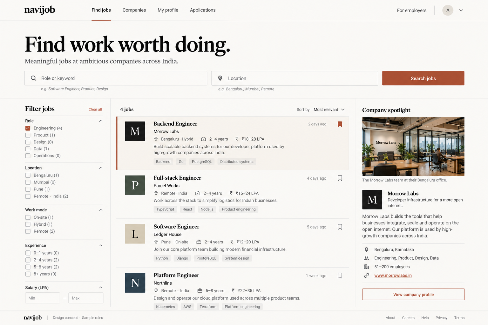
Editorial / Oxide
Rejected.
Open full size ↗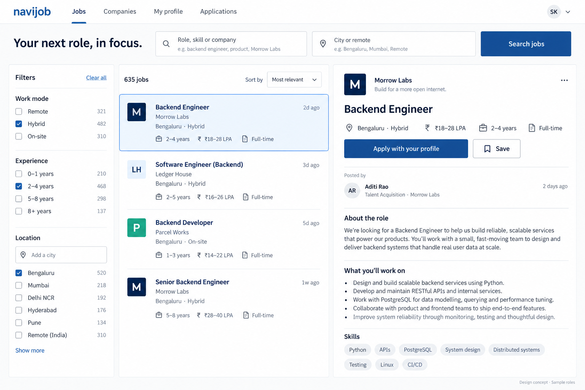
Professional / Blue
Rejected.
Open full size ↗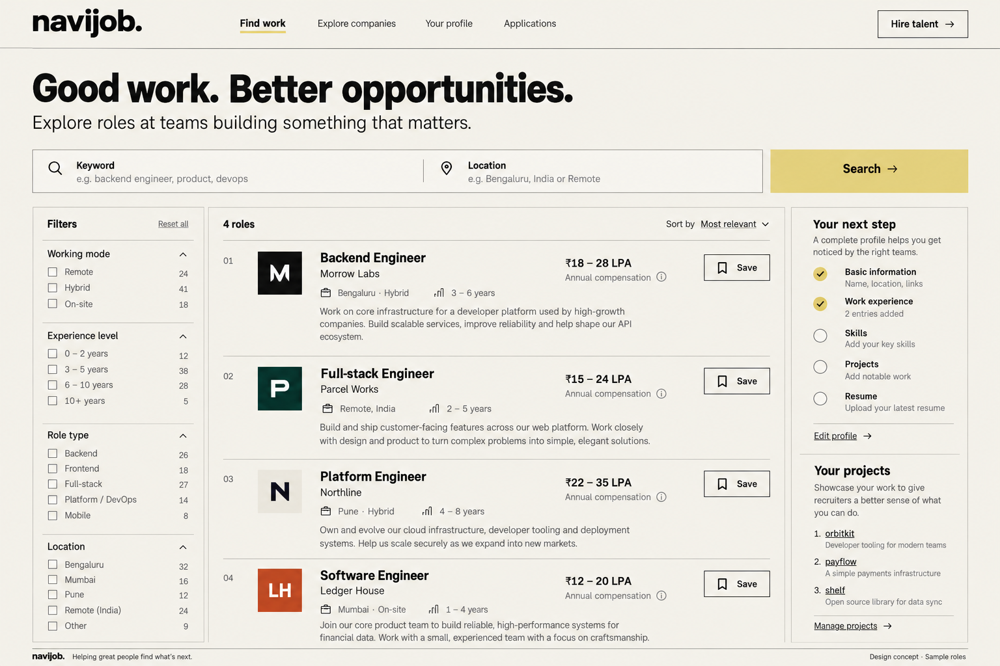
Studio Directory
Rejected.
Open full size ↗Reference captures — design study
Third-party gallery captures for inspiration. Copyright remains with the respective owners.
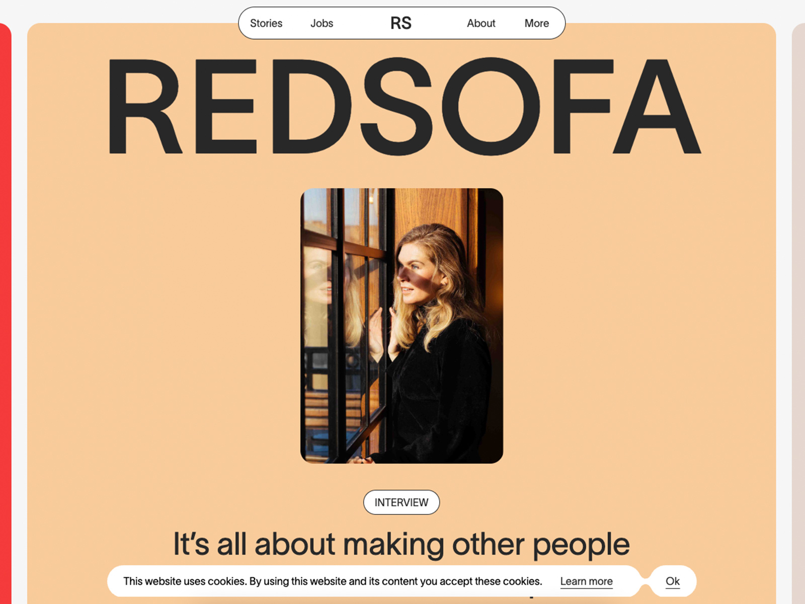
REDSOFA
Reference for recruitment identity.
Gallery source ↗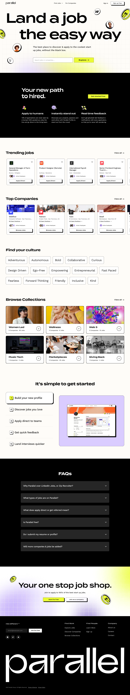
Parallel
Reference for B / Open Road.
Gallery source ↗Frontify careers
Reference for editorial rhythm.
Gallery source ↗